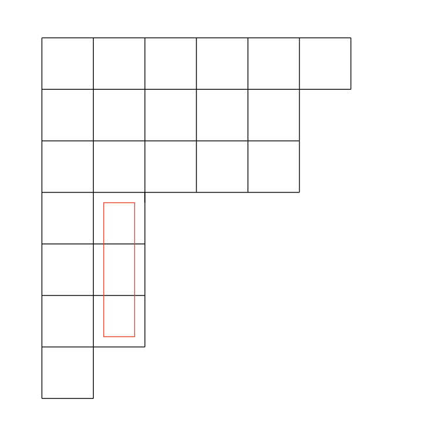

CRIT is an enhanced version of RIT (Impartial Row/Column Game) that allows players to make moves on both rows and columns.
=======
CRPM
Partizan Integer Partition Combinatorial Game
CRIT is an enhanced version of RIT (Impartial Row/Column Game) that allows players to make moves on both rows and columns.
>>>>>>> Stashed changes
Moves
CRIT is mostly RIT, but with the addition of a "column-type" move:

Figure 1 — CRIT "column-comparison" move
In addition to “row-comparison” removal, this new move column comparison, too, will be legal: some cell of column $c_i$ can be removed as long as it is greater than or equal to $c_{i+1}$.
More
Some research are already waiting on publication approval - please contact Prof. Gottlieb for related queries.